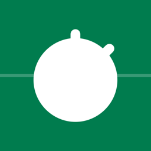

워치만 차고 경기장에 나가세요.
아마추어 축구 심판을 위한 Apple Watch 경기 타이머와 기록.
조기축구, 동호회, 유소년 리그까지. 폰 없이 워치 하나로 경기 전체가 돌아갑니다.
전·후반, 쿼터제, 연장전, 승부차기까지. 중단 시간을 따로 재서 권장 추가시간을 보여줍니다.
종료 직전, 하프타임 종료, 일시 퇴장 복귀 시점을 손목 진동으로 알려줍니다.
골, 경고, 퇴장, 교체를 팀·등번호와 함께 기록합니다. 경고 2회는 자동으로 퇴장 처리합니다.
FIFA 표준을 기본으로, 경기 시간·인원·교체 한도·일시 퇴장까지 바꿔 프리셋으로 저장하세요.
심박수, 이동 거리, 스프린트, 이동 히트맵을 경기 기록과 함께 남기고 건강 앱에 운동으로 저장합니다.
경기가 끝나면 iPhone에서 득점·카드·교체와 적용 규칙이 정리된 보고서를 바로 공유할 수 있습니다.
경기 운영에 꼭 필요한 기능은 무료로, 기록과 분석은 PRO로.
₩0
월 ₩3,300 · 연 ₩22,000 · 7일 무료 체험
구독은 iPhone 앱에서 할 수 있으며, App Store 계정 설정에서 언제든 해지할 수 있습니다.
계정도, 서버도 없습니다. 경기 기록과 건강 데이터는 Apple Watch와 iPhone 사이에서만 오갑니다.
개인정보처리방침 보기
Whistle PRO turns your Apple Watch into a match timer and notebook. Run the whole match from your wrist — periods, stoppage time, vibration alerts — and log goals, cards and substitutions in four taps.
After the final whistle, review the match, your heart rate, distance and heatmap on iPhone, and share a match report. The timer is free forever; PRO is $2.99/month or $19.99/year with a 7-day free trial.